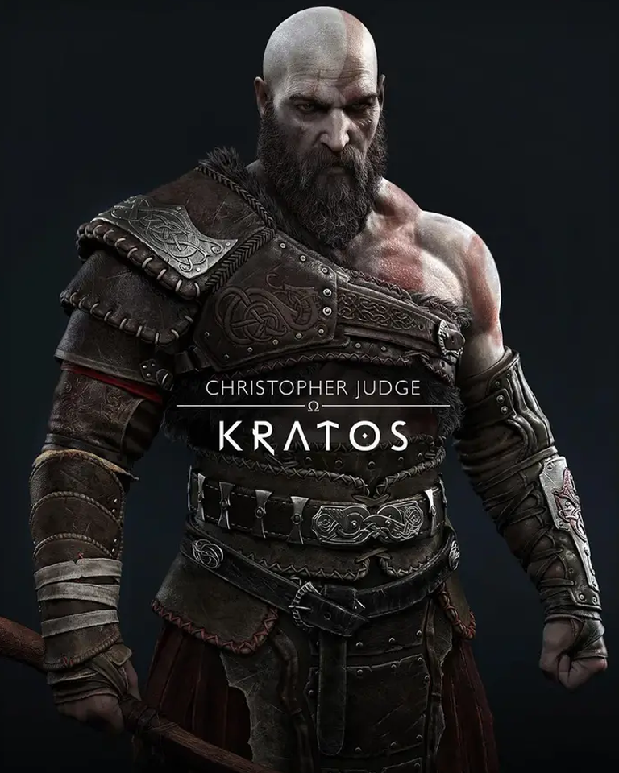
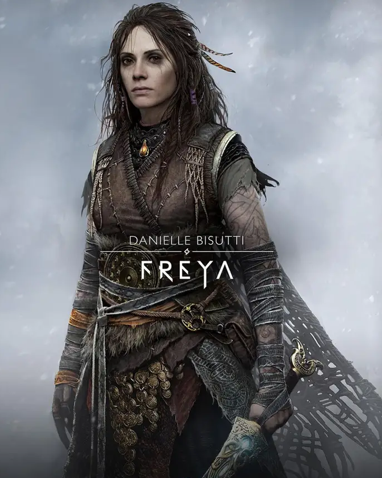

God of War es un videojuego de acción-aventura desarrollado por SCE Santa Monica Studio y publicado por Sony Interactive Entertainment. Su lanzamiento se produjo el 20 de abril de 2018 como un título exclusivo para la consola PlayStation 4. Posteriormente, fue lanzado en Microsoft Windows el 14 de enero de 2022. Se trata de la octava entrega de la serie de God of War, cronológicamente, y la secuela de God of War III. La historia se centra en la mitología nórdica y Kratos regresa como el protagonista principal.
Han pasado años desde que Kratos tomó su venganza contra los Dioses Olímpicos. Habiendo sobrevivido la pelea final contra su padre Zeus, Kratos vive ahora con su joven hijo Atreus en el mundo de los Dioses Nórdicos, una tierra hostil habitada por feroces monstruos y guerreros. Kratos deberá actuar como mentor y protector de su hijo, y tendrá que dominar la ira y enojo que tuvo durante muchos años y atar cabos sueltos.
El Ragnarok es la batalla definitiva de la mitología nórdica. El evento que sentenciará todos los reinos regentados por Asgard y al propio mundo tras un apoteósico enfrentando entre Odin y Loki. Una batalla épica sin precedentes en la que, una vez más, colisionan el orden y el caos.
El fin de los tiempos viene precedido de dos grandes acontecimientos. Por un lado, tendrán lugar tres inviernos seguidos sin veranos intermedios (el Fimbulvetr); mientras que por otro las deidades del sol y la luna serán finalmente alcanzadas por los lobos Sköll y Hati, sumiendo al mundo en penuria, desesperación y tinieblas.
Los eventos del Ragnarok han sido adaptados de mil maneras durante incontables generaciones a la cultura popular, incluyendo Universo Cinematográfico de Marvel. Sin embargo, el nuevo capítulo de la serie God of War será la continuación directa del considerado juego del año de 2018. Y eso significa que antes de avanzar debernos tener presente su final
| VideoJuego | Año | Cronología |
|---|---|---|
| God of War | 2005 | 3 |
| God of War: betrayal | 2007 | 4 |
| God of War: II | 2007 | 6 |
| God of War: Chains of Olympus/td> | 2008 | 2 |
| God of War: III | 2010 | 7 |
| God of War: Ghost of Sparta | 2010 | 5 |
| God of War: Ascension | 2013 | 1 |
| God of War | 2018 | 8 |
| God of War: Ragnarok | 2022 | 9 |